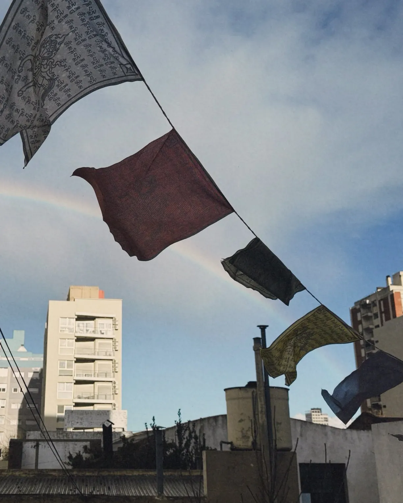

Muchas tradiciones, un mismo camino.
Somos un canal de intercambio entre los grupos budistas del país. Reunimos centros, grupos y practicantes de distintas tradiciones para encontrarnos, compartir lo que hacemos y colaborar.
Si recién empezás, no hace falta experiencia previa para acercarte.
Un canal de intercambio entre los grupos budistas del país.
La Red Budista de Argentina reúne centros, grupos y practicantes de distintas tradiciones budistas. No es una escuela ni un linaje: cada comunidad conserva sus maestros y su forma de practicar.
Nuestra misión es que los grupos se conozcan, compartan lo que hacen y puedan colaborar entre sí, y que cualquier persona que quiera practicar sepa dónde y cómo hacerlo. Respetamos por igual a todas las tradiciones.
Encuentro
Promovemos el diálogo y la colaboración entre las distintas tradiciones presentes en el país.
Difusión
Compartimos información clara sobre dónde y cómo practicar, sin proselitismo.
Servicio
Coordinamos acciones conjuntas de ayuda y compromiso social entre los grupos.
Grupos y centros budistas
Cada centro publica sus propias actividades. Escribiles antes de ir por primera vez.
La Red es una iniciativa de Fundación Conecta(se abre en una pestaña nueva) y está abierta a todos los grupos budistas interesados.